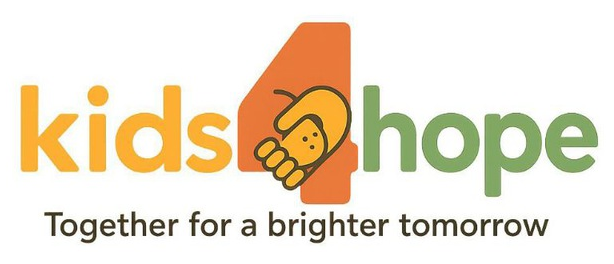
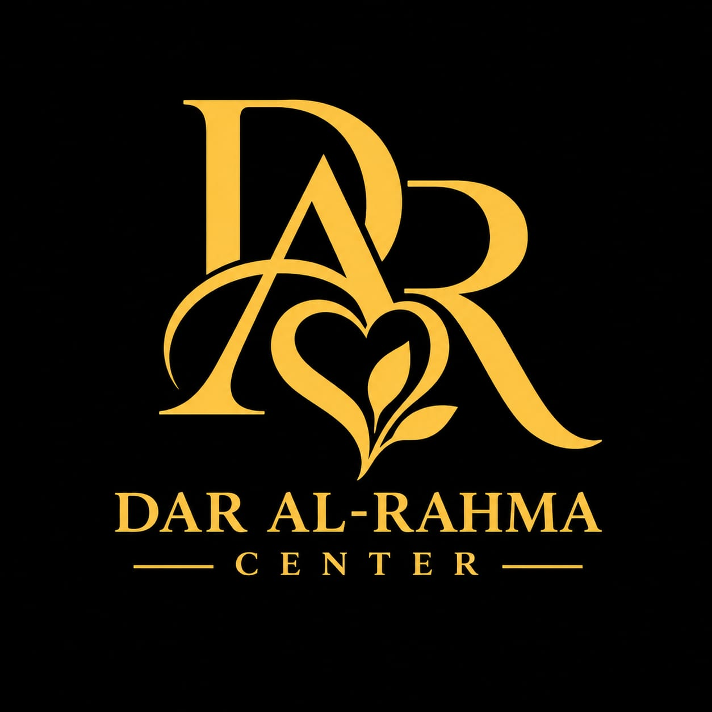

Jedes Kind ist ein Stern.
140 Waisenkinder in Gaza lernen bei Kids4Hope – im eigenen Schulzelt, mit Heften, Farben und ganz viel Zuwendung. Ein eigenständiges Projekt, begleitet und unterstützt von Dar Al-Rahma.
Kids4Hope unterstützen0 Sterne der Hoffnung hast du angezündet. Tippe in den Himmel.
Together for a brighter tomorrow
Kachel antippen zum Umdrehen.
Kinder, die Eltern verloren haben, bekommen bei Kids4Hope Unterricht, Struktur und jemanden, der für sie da ist.
Das Team hat ein Zelt aufgebaut und mit Holzrahmen, Tischen und Bänken ausgestattet – ein fester Ort zum Lernen.
Laut UN müssen 93 % der Schulgebäude neu gebaut oder grundlegend instand gesetzt werden. Deshalb sind Orte wie dieses Zelt so wichtig.
OCHA, 23.09.2026So viele Kinder haben laut UNICEF einen oder beide Elternteile verloren.
UNICEF über OCHAEin Ort zum Lernen
Vom Zeltaufbau bis zur Urkunde. Bild antippen für die Großansicht.
Ein Schulzelt entsteht
Helfer bauen das Zelt auf und zimmern Rahmen und Bänke.
Lernen
Schreiben, lesen, rechnen – und stolz zeigen, was man geschafft hat.
Freude & Gemeinschaft
Basteln, Malen, Lachen – und am Ende eine Urkunde.
Bilder der Kinder
Was die Kinder selbst gemalt haben.
Aus dem Schulzelt
Über Kids4Hope
Was Kids4Hope machtLernen, Struktur, Zuwendung
Hasan und sein Team begleiten 140 Waisenkinder beim Lernen. Sie geben den Kindern Raum, Fragen zu stellen, Neues zu entdecken und sich über ihre Fortschritte zu freuen – ein Stück Normalität mitten in der Not. Dazu gehören Unterricht, Lesen und Schreiben, Basteln und Malen und kleine Feste wie die Urkundenübergabe.
Wer dahinter stehtHasan und sein Team vor Ort
Kids4Hope wird von Hasan und seinem Team in Gaza getragen. Hasan leitet das Projekt vor Ort und ist verantwortlich für die tägliche Arbeit mit den Kindern.
Was gebraucht wirdBeispiele – die genaue Liste folgt
- Hefte, Stifte, Bücher und Bastelmaterial
- Tische, Bänke, Planen und Winterfestmachen des Zelts
- Kleine Mahlzeiten und Trinkwasser für die Kinder
- Kleidung und Decken für den Winter
Eine genaue Bedarfsliste folgt.
Wie das Netzwerk hilftBegleiten, unterstützen, verbinden
Kids4Hope ist ein eigenständiges Projekt. Dar Al-Rahma begleitet und unterstützt es – mit Sichtbarkeit, Spendenwegen und Verbindungen zu den anderen Projekten im Netzwerk. Gemeinsam mit weiteren Kinderprojekten ist Kids4Hope auch im Sammelbereich Children's Relief zu finden.

Ein eigenständiges Projekt im Netzwerk von Dar Al-Rahma. Gemeinsam mit dem Medical Point North Gaza und Cat Rescue – denn gemeinsam ist man stark.
Alle Projekte